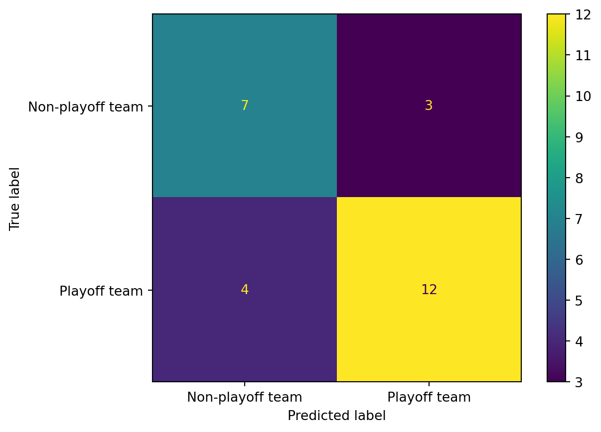
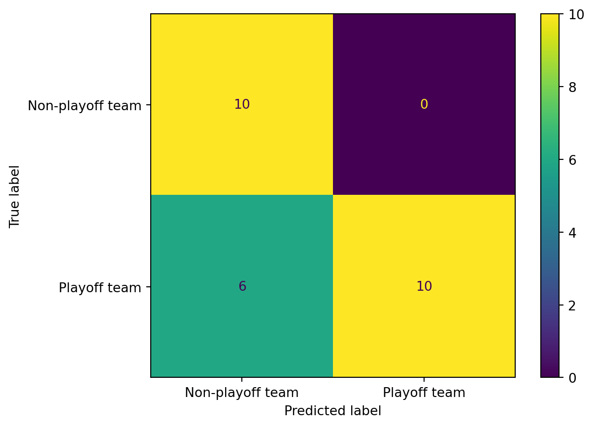

Code
import numpy as np
import pandas as pd
import sklearn
from sklearn import metrics
import scipy.stats
from scipy.stats import spearmanr
import itertools
from itertools import chain, combinationsGrace Hyland
The Naive Bayes classification machine learning model uses Bayes Theorem to classify data points into one of several labels. When multiple features are used, the model calculates the probability of each label being the true label based on the conditional probability from the state of the feature. This is done for each of the features present, and the model assigns the label with the highest probability.
The Naive Bayes model operates under the assumption that the effects of the different features are independent of one another.
Given my prior hypothesis that certain team evaluation metrics during powerplays may be more predictive of regular season team success, I am looking to use Naive Bayes classification to determine which features are most predictive and then determine if these features during power play situations can be more accurately used to train a ML model to predict playoff berths than features from regular 5 on 5 game play.
I prepared the team powerplay data for Naive Bayes classification in an R file linked in the Code page. Team data from the 2018-2019, 2020-2021, 2021-2022, and 2022-2023 seasons were combined and the desired features were subsetted from the greater dataset. An additional variable was added for whether or not the team made the playoffs that season and all numerical metrics were normalized. Finally, all non-numerical variables except the playoff variable were removed. To begin building the model on powerplay data, I first had to import the necessary libraries.
I loaded the previously cleaned dataset “team_pp_data_clean.csv” and prepared it for use by a Naive Bayes model by creating a separate dataframe to hold the labels and then removed the column of labels to create a data frame that holds the features. The values of the features were already normalized in the cleaning process. I also created a variable holding a list of the feature names.
After loading the pre-prepared dataset, I used sklearn to split the dataset into a training set and a test set with an 80-20 split. It is important to keep a portion of the data aside to test the accuracy of the model on so as to prevent overfitting to the test data.
The first NB model I used incorporated the data from all eight features. The GaussianNB model from the sklearn package was trained on the previously partitioned training data.
from sklearn.naive_bayes import GaussianNB
model=GaussianNB()
model.fit(X_train, y_train)
from sklearn.metrics import accuracy_score
from sklearn.metrics import f1_score
from sklearn.metrics import confusion_matrix
from sklearn.metrics import ConfusionMatrixDisplay
y_pred=model.predict(X_test)
accuracy=accuracy_score(y_pred, y_test)
f1 = f1_score(y_pred, y_test, average="weighted")
print("Accuracy score:",accuracy)
print("F1 score:",f1)
print("Precision:", sklearn.metrics.precision_score(y_pred,y_test))
cm=confusion_matrix(y_test, y_pred)
disp=ConfusionMatrixDisplay(confusion_matrix=cm, display_labels=["Non-playoff team","Playoff team"])
disp.plot()Accuracy score: 0.8076923076923077
F1 score: 0.809839283523494
Precision: 0.875<sklearn.metrics._plot.confusion_matrix.ConfusionMatrixDisplay at 0x7fb5f15f3160>After training on the training data, I had the model predict whether the records in the test data were playoff teams based on their features. The accuracy and f1 scores were both around 80% which is pretty high, the precision score is 87.5% and the confusion matrix shows that the model was equally proficient at predicting teams to make the playoffs as they are at predicting teams to miss the playoffs.
Further, I would like to test other subsets of features to find a more accurate model. And then carry out the same process to evaluate models based on regular 5 on 5 play and compare the accuracy of these two models.
For now, it is clear to see that player evaluation metrics during power plays can be used to predict regular season success.
Feature selection is a process by which only the most predictive and least correlated features are used to train a model in order to maximize accuracy.
To find the subset of features that result in the highest accuracy score, I will find every possible combination of the eight features and calculate a metric to evaluate their correlation coefficients.
After creating a list of all possible feature subsets from the data, I created functions to calculate the average correlation between all pairs of features in any given subset and the average correlation between each feature in the subset and the label data. The values returned by the function can be used to calculate a merit score for each feature subset to determine the best feature subset. The best feature subset will be a set of features that are minimally correlated with each other and maximally correlated with the label data.
#calculate spearman correlation coefficients for each subset
#function for mean correlation between each pair of features in the subset
def mean_xx_corr(x_df):
df_colnames=x_df.columns
xx_corrs=[]
df_colname_pairs=itertools.combinations(df_colnames, 2)
for colname1, colname2 in df_colname_pairs:
col1=x_df[colname1]
col2=x_df[colname2]
xx_pair_corr=scipy.stats.spearmanr(col1, col2)
xx_corrs.append(xx_pair_corr)
return np.mean(xx_corrs)
#function for mean correlation between each feature in the subset and the label
def compute_mean_xy_corr(x_df, y_vec):
df_colnames=x_df.columns
xy_corrs=[]
for colname in df_colnames:
x_col = x_df[colname]
xy_pair_corr = spearmanr(x_col, y_vec)
xy_corrs.append(xy_pair_corr)
return np.mean(xy_corrs)Using the functions above, I iterated over each possible subset to calculate the merit score for all feature subsets.
best_subset=np.NaN
best_merit_score=0
for i in range(len(feature_subset)):
subset=feature_subset[i]
if len(subset)==1:
df_sub=df[[subset[0]]]
if len(subset)==2:
df_sub=df[[subset[0],subset[1]]]
if len(subset)==3:
df_sub=df[[subset[0],subset[1],subset[2]]]
if len(subset)==4:
df_sub=df[[subset[0],subset[1],subset[2],subset[3]]]
if len(subset)==5:
df_sub=df[[subset[0],subset[1],subset[2],subset[3],subset[4]]]
if len(subset)==6:
df_sub=df[[subset[0],subset[1],subset[2],subset[3],subset[4],subset[5]]]
if len(subset)==7:
df_sub=df[[subset[0],subset[1],subset[2],subset[3],subset[4],subset[5],subset[6]]]
if len(subset)==8:
df_sub=df[[subset[0],subset[1],subset[2],subset[3],subset[4],subset[5],subset[6],subset[7]]]
if len(subset)>0:
xx_corr=mean_xx_corr(df_sub)
xy_corr=compute_mean_xy_corr(df_sub, label)
k=len(subset)
merit_score_numer = k * np.absolute(xy_corr)
merit_score_denom = np.sqrt(k + k * (k + 1) * np.absolute(xx_corr))
merit_score_s2 = merit_score_numer / merit_score_denom
if len(subset)==0:
merit_score_s2=0
if merit_score_s2 > best_merit_score:
best_merit_score=merit_score_s2
best_subset=subsetThe best subset is: ('corsiPercentage', 'giveawaysFor', 'hitsFor') which has a merit score of 0.4721158842275389The best subset based on the merit score was a subset with the three features corsiPercentage, giveawaysFor, and hitsFor. Using this subset, I trained a new Naive Bayes model using only these three features.
X = feature_matrix[["corsiPercentage","hitsFor","giveawaysFor"]]
y= label
X_train, X_test, y_train, y_test = train_test_split(
X, y,
test_size=0.2,
random_state=100
)
model2=GaussianNB()
model2.fit(X_train, y_train)
y_pred=model2.predict(X_test)
accuracy=accuracy_score(y_pred, y_test)
f1 = f1_score(y_pred, y_test, average="weighted")
print("Accuracy score:",accuracy)
print("F1 score:",f1)
print("Precision:", sklearn.metrics.precision_score(y_pred,y_test))
cm=confusion_matrix(y_test, y_pred)
disp=ConfusionMatrixDisplay(confusion_matrix=cm, display_labels=["Non-playoff team","Playoff team"])
disp.plot()Accuracy score: 0.7307692307692307
F1 score: 0.7287014061207611
Precision: 0.75<sklearn.metrics._plot.confusion_matrix.ConfusionMatrixDisplay at 0x7fb5f1a48df0>
Using the best subset determined from the feature selection process did result in lower accuracy, precision, and f1 score than the model that used all eight features. Based on a comparison of the confusion matrices from the two models, the difference in accuracy appears to come from the model with fewer features assigning an inaccurate Non-playoff team label to two additional true Playoff teams. The difference is very minimal between these two so the computational efficiency of using three features instead of eight means the model with feature selection is likely better because it will also be less prone to overfitting if employed on a larger dataset.
After evaluating a Naive Bayes model based only on power play data, I want to test my hypothesis that metrics from playoff minutes can be more predictive of regular season success than metrics from regular play minutes by comparing the accuracy of a model based on regular play data.
Using the cleaned data set “team_regular_data_clean.csv” I followed the same process for preparing the data for the Naive Bayes model as detailed above with the power play data.
df=pd.read_csv("../data/01-modified-data/team_regular_data_clean.csv")
label = df['playoff'].copy()
df=df.drop(columns=['Unnamed: 0','playoff'])
features=df.columns
feature_matrix = df[features].copy()
X = feature_matrix
y= label
X_train, X_test, y_train, y_test = train_test_split(
X, y,
test_size=0.2,
random_state=100
)Using the prepared and split data from above, I trained a Naive Bayes model on regular play data with all eight features and calculated accuracy, precision, and f1 scores and constructed a confusion matrix.
model=GaussianNB()
model.fit(X_train, y_train)
y_pred=model.predict(X_test)
accuracy=accuracy_score(y_pred, y_test)
f1 = f1_score(y_pred, y_test, average="weighted")
print("Accuracy score:",accuracy)
print("F1 score:",f1)
print("Precision:", sklearn.metrics.precision_score(y_pred,y_test))
cm=confusion_matrix(y_test, y_pred)
disp=ConfusionMatrixDisplay(confusion_matrix=cm, display_labels=["Non-playoff team","Playoff team"])
disp.plot()Accuracy score: 0.7307692307692307
F1 score: 0.7287749287749288
Precision: 0.625<sklearn.metrics._plot.confusion_matrix.ConfusionMatrixDisplay at 0x7fb5f15f3040>The accuracy and precision scores for this model are very similar to the accuracy and precision scores for the model with feature selection on power play data, but the precision score is lower than the precision score for either power play based models.
For a full comparison between regular data and power play data, I will now apply the same feature selection process to regular play data and train a model on the ideal subset of regular play data.
#list all possible feature subsets
feature_subsets = list(features)
feature_subset=chain.from_iterable(combinations(feature_subsets,r) for r in range(len(feature_subsets)+1))
feature_subset=list(feature_subset)
best_subset=np.NaN
best_merit_score=0
for i in range(len(feature_subset)):
subset=feature_subset[i]
if len(subset)==1:
df_sub=df[[subset[0]]]
if len(subset)==2:
df_sub=df[[subset[0],subset[1]]]
if len(subset)==3:
df_sub=df[[subset[0],subset[1],subset[2]]]
if len(subset)==4:
df_sub=df[[subset[0],subset[1],subset[2],subset[3]]]
if len(subset)==5:
df_sub=df[[subset[0],subset[1],subset[2],subset[3],subset[4]]]
if len(subset)==6:
df_sub=df[[subset[0],subset[1],subset[2],subset[3],subset[4],subset[5]]]
if len(subset)==7:
df_sub=df[[subset[0],subset[1],subset[2],subset[3],subset[4],subset[5],subset[6]]]
if len(subset)==8:
df_sub=df[[subset[0],subset[1],subset[2],subset[3],subset[4],subset[5],subset[6],subset[7]]]
if len(subset)>0:
xx_corr=mean_xx_corr(df_sub)
xy_corr=compute_mean_xy_corr(df_sub, label)
k=len(subset)
merit_score_numer = k * np.absolute(xy_corr)
merit_score_denom = np.sqrt(k + k * (k + 1) * np.absolute(xx_corr))
merit_score_s2 = merit_score_numer / merit_score_denom
if merit_score_s2 > best_merit_score:
best_merit_score=merit_score_s2
best_subset=subsetThe best subset is: ('xGoalsPercentage', 'corsiPercentage', 'goalsFor', 'giveawaysFor', 'hitsFor') which has a merit score of 0.3988440207335123The best subset features for regular play data is expected goals percentage, Corsi percentage, goals for, giveaways for, and hits for. This includes all the features from the power play subset in addition to expected goals percentage and goalsFor. The increase in features for regular data may indicate that less data is needed from power play play to make an equally accurate prediction on regular season success for a team.
I trained and tested a model on this subset of features and calculated accuracy score, precision score, and f1 score and constructed a confusion matrix for the test set of the model.
X = feature_matrix[["xGoalsPercentage","goalsFor","corsiPercentage","hitsFor","giveawaysFor"]]
y= label
X_train, X_test, y_train, y_test = train_test_split(
X, y,
test_size=0.2,
random_state=100
)
model2=GaussianNB()
model2.fit(X_train, y_train)
y_pred=model2.predict(X_test)
accuracy=accuracy_score(y_pred, y_test)
f1 = f1_score(y_pred, y_test, average="weighted")
print("Accuracy score:",accuracy)
print("F1 score:",f1)
print("Precision:", sklearn.metrics.precision_score(y_pred,y_test))
cm=confusion_matrix(y_test, y_pred)
disp=ConfusionMatrixDisplay(confusion_matrix=cm, display_labels=["Non-playoff team","Playoff team"])
disp.plot()Accuracy score: 0.7692307692307693
F1 score: 0.7692307692307693
Precision: 0.625<sklearn.metrics._plot.confusion_matrix.ConfusionMatrixDisplay at 0x7fb5f1a8ded0>
The regular play model with feature selection has slightly higher accuracy and f1 scores than the power play model with feature selection, but not higher than the power play model with all features used. Howevery, the precision score is quite a bit lower than both power play data models. This model seems to be good at classifying non-playoff teams, but has a lower success rate with identifying teams that do qualify for the playoffs.
DSAN 5000 Lecture Content (Hickman 2023)